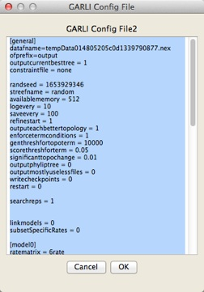

GARLI
GARLI is a program for finding maximum-likelihood phylogenies. It is written by Derrick Zwickl; more details can be found on the GARLI home page. Zephyr requires version 2.0 or later of GARLI. If you use GARLI, please cite it appropriately as recommended in the program's documentation.The GARLI dialog box within Zephyr has four panels. The first panel ("GARLI Program Details") differs depending upon whether you are doing a local analysis (left) or a CIPRes analysis (right):
GARLI Likelihood [Local]: If running GARLI on the same computer that has Mesquite on it, then in this panel you will need to first specify where on your computer's hard disk your copy of GARLI resides. The next few options (script-based, terminal, delete analysis directory) are discussed in the Local Analyses page. In this panel you will also need to specify the amount of memory you wish to give to GARLI, and the number of processors you would like it to use. Note as well the version number of GARLI that is needed for the particular installation of Zephyr that you have running; it should be stated in this panel.
Whether you are running GARLI locally or not, you have the option to automatically save the Mesquite file after the inference in completed and the phylogenetic trees moved into the file.
The second dialog box allows you do choose whether a bootstrap analysis is done (and, if so, the number of bootstrap replicates), or whether or not a simple search for a maximum likelihood tree is done (and, if so, details about that search, including the number of search replicates). In addition, it allows you to choose whether a constrained analysis is done, and, if so, what sort. If you do choose to do a constrained analysis, then the constraint tree will need to be shown in a Mesquite treewindow in your file.
In the "Character Models" panel, you can choose the models to be used by GARLI. If you have character groups or codon positions assigned to the sites in your matrix, you can use those as partitions in the analysis. You then get to choose the model used for each partition subset (e.g., you can ask for all 1st positions to have one model, all 2nds a different model).
In choosing the model to use for a partition, you can choose the rate matrix, state frequencies, etc., separately, or you can press the Set by Model Name button and enter the name of the model from Posada (2008). For example, if you enter "TIM2e", then Zephyr will automatically set the rate matrix to "Custom", with the substitution code as "(0 1 0 2 3 2)", and the state frequencies to Equal.
In the final panel ("Other options") you can choose to have the GARLI config file shown. If you choose this option, then Zephyr will present the config file to you before the run starts:

Once you press OK, either the run will start (if local) or you may be asked to log in to CIPRes. The run will start, and GARLI will start searching for trees, writing the intermediate trees found to a file on the disk. Zephyr reads in the contents of that tree file, and will show you the current tree. At the end of the search, Zephyr will harvest the final tree or trees and present them to you in a tree window:
If you have done a non-bootstrap analysis, then Zephyr will read in the final likelihood score of each of the GARLI trees. These scores can be seen by choosing Taxa&Trees>List of Trees>[name of GARLI tree block], and once the window listing the trees is visible, choosing Columns>Number for Tree>GARLI Score.